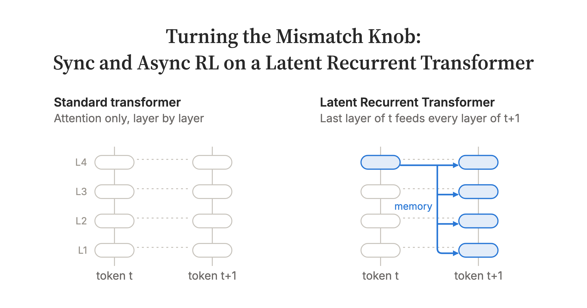

Turning the Mismatch Knob: Sync and Async RL on a Latent Recurrent Transformer
What happens when you post-train a Latent Recurrent Transformer with existing RL methods, synchronously and asynchronously.
Read the post →I am a third-year PhD candidate in Computer Science at UCLA advised by Prof. Nanyun (Violet) Peng. Before, I graduated from the University of Michigan, with a B.S. in Computer Science and Pure Math, advised by Prof. Joyce Y. Chai.
My research asks when language models, multimodal systems, and AI agents actually get better: at training time, at test time, and in the world.
I have been recognized with the Amazon Fellowship (2026), the Outstanding Graduate MS Student Award from UCLA CS Department (2025, 1 per year), and the Outstanding Reviewer Award at EMNLP 2023 (top 0.74%).
📣 I'm looking for full-time positions in industry starting Jan 2027. Happy to connect if you think we might be a match!
When does post-training (SFT, distillation, RL) truly improve a model's reasoning, rather than just its score?
When do more agents, more compute, and memory at test time make a system better, and when do errors spread instead?
How do we keep these systems safe and fair for people across cultures and social groups?

What happens when you post-train a Latent Recurrent Transformer with existing RL methods, synchronously and asynchronously.
Read the post →* denotes Equal Contributions and Project Lead
We audit on-policy self-distillation across four stages of reasoning transfer: Source, Encoding, Transmission, and Expression. Across three Qwen3 scales, privileged solutions improve teacher solving and recovery but do not reliably yield useful supervision or independent student reasoning. Controlled comparisons show that the largest gains track the teacher's thinking mode, with problem-only teachers often matching or outperforming teachers given solutions. We call this pattern reasoning arbitrage, highlighting why accuracy gains alone cannot establish reasoning transfer from privileged information.
We introduce a controlled testbed for studying goal-directed agent-to-agent persuasion in networks of LLM agents grounded in real-world ego-network topologies, finding that persuasion dynamics depend on the interaction of topology, competition, topic, and model prior. We show that direct exposure reliably predicts next-round stance change while peer relays carry smaller but measurable influence, arguing for evaluating multi-agent persuasion as a trajectory- and exposure-level process using belief probes, exposure provenance, and action logs.
We introduce MMPersuade, a unified framework for studying multimodal persuasion in LVLMs, showing that multimodal inputs substantially increase model susceptibility to persuasion—especially in misinformation scenarios—and that different persuasion strategies vary in effectiveness across contexts.
We propose MMGR, a principled evaluation framework for generative reasoning across abstract reasoning, embodied navigation, and physical commonsense, revealing that leading video and image models struggle with causal correctness and long-horizon spatial planning.
We introduce VideoBiasEval, a diagnostic framework that traces how social biases evolve through the alignment pipeline of video diffusion models. By training our own reward models and alignment-tuned diffusion models, we provide a full training recipe and reveal that alignment tuning not only strengthens representational biases but also makes them temporally stable across generated videos.
We propose GUI-KV, a plug-and-play KV cache compression method for GUI agents that exploits spatial saliency and temporal redundancy, reducing decoding FLOPs by 38.9% while increasing step accuracy by 4.1% over full-cache baselines without retraining.
We introduce CROSS, a benchmark of 1,284 multilingual visually grounded queries from 16 countries to assess cultural safety in LVLMs. We develop supervised fine-tuning with culturally grounded data and preference tuning with contrastive response pairs, substantially improving GPT-4o's cultural awareness (+60%) and compliance (+55%) while preserving general capabilities.
We propose CogAlign, a post-training strategy inspired by Piaget's cognitive development theory that trains VLMs to recognize invariant properties under visual transformations. CogAlign outperforms supervised fine-tuning while requiring 60% less training data, significantly improving visual arithmetic and downstream chart and geometry understanding.
We introduce CASA, a benchmark for evaluating LLM web agents' cultural and social awareness across shopping and forum tasks, finding that agents achieve less than 10% awareness coverage with over 40% norm violation rates. We show that fine-tuning on culture-specific datasets enhances cross-region generalization, while prompting boosts complex task navigation.
We provide a comprehensive survey of automatic chart understanding in the era of large foundation models, covering tasks, evaluation metrics, modeling strategies, and future directions including domain-specific charts and agent-oriented settings.
We introduce SafeWorld, a benchmark of 2,342 queries grounded in human-verified cultural norms and legal policies from 50 countries, along with a multi-dimensional safety evaluation framework. Using synthesized preference pairs for DPO, our trained SafeWorldLM outperforms GPT-4o across all evaluation dimensions by a large margin.
We propose BiasPainter, an evaluation framework that automatically triggers and detects social biases in image generation models across 62 professions, 39 activities, 57 objects, and 70 personality traits, achieving 90.8% accuracy on automatic bias detection.
We introduce a multi-dimensional benchmark and LLM-based evaluation framework for LVLM hallucination that covers objects, attributes, and relations, generalizing the CHAIR metric to jointly assess both faithfulness and coverage of model outputs.
We propose AMRFact, a framework that leverages Abstract Meaning Representations to generate coherent factually inconsistent summaries with high error-type coverage for training factual consistency evaluators, significantly outperforming previous systems on the AggreFact-SOTA benchmark.
We conduct a systematic study of gender biases in model-based evaluation metrics (e.g., CLIPScore) for image captioning, revealing that using biased metrics as rewards in RL training propagates and amplifies stereotypes in generation models. We propose an effective debiasing method without hurting correlation with human judgments.